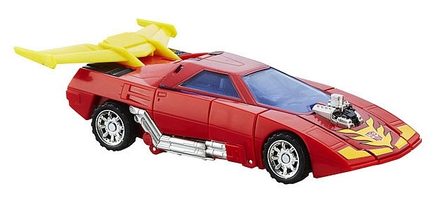
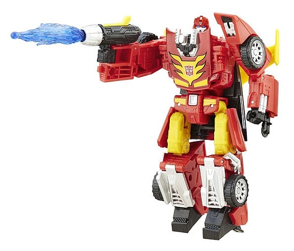
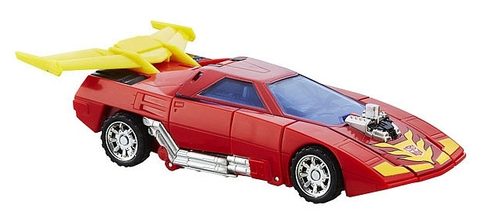
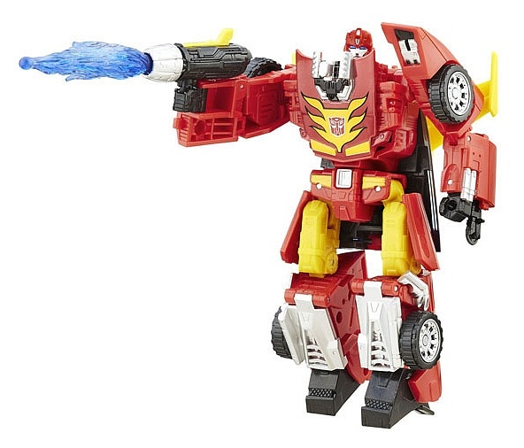
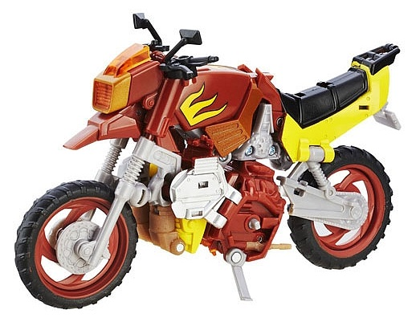
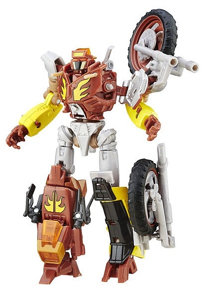
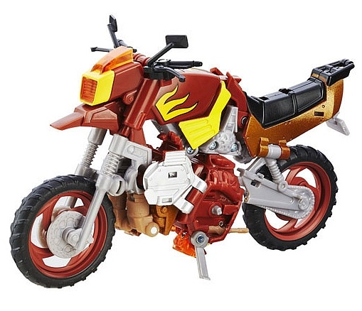
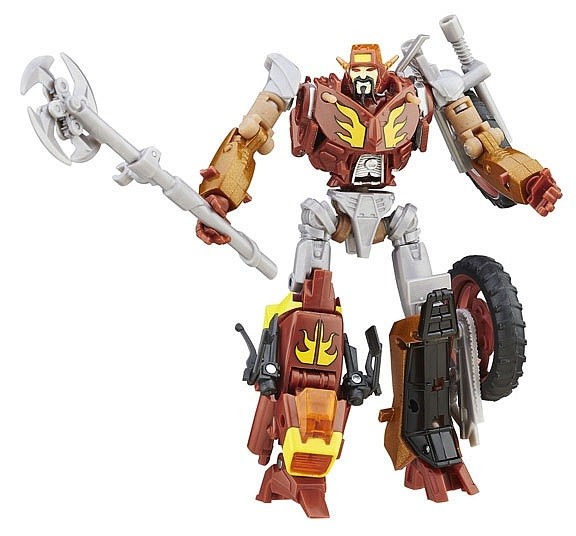

 
Size : Deluxe
Difficulty of Transformation : Medium
Color Scheme : Moderately dark red, yellow, black, and some silver, transparent blue, dark red, and light orange
Individual Rating : 8.3
Allegiances
: Autobot
Set Price
: $75 (U.S.)
Overall Rating
: 8.5
(NOTE: Because this set is composed of repaints,
this is not a full-blown review. This mainly covers any changes made to
the set and the color scheme, and merely compares it to the original versions
of these molds. For a review on Classics Rodimus--the mold used for Hot
Rod--go
here
. For a review Autobot Alliance
Wreck-Gar- the mold used for both Wreck_Gar and Scrapheap--go
here.
)
 Hot
Rod
Hot
Rod


Size
: Deluxe
Difficulty of Transformation
: Medium
Color Scheme
: Moderately dark red,
yellow, black, and some silver, transparent blue, dark red, and light orange
Individual Rating
: 8.3
Hot Rod here takes the
same general color layout of Classics Rodimus, but tweaks things juuust
enough where you might consider getting it if you're a big Hot Rod fan,
because that's what Hasbro does best! Anyways, compared to the original
Classics Rodimus, this version of Hot Rod has a slightly lighter shade
of red used for most of his plastic (though it's still fairly dark). However,
the red paint used on such areas as his hood and around his windows is
still darker, which makes for a bit of a color mismatch. It's not huge,
but it's noticeable. The orange plastic from the Classics version is now
a more solid yellow on the spoiler and upper legs. To me this looks better,
though again, there's a color mismatch because the paint used for his very
G1-esque flame details on his chest-- as well as his headlights-- is more
of an orange shade. It's just odd that two of the main colors have slight
variants on the toy that stick out, but not enough that it's obvious it's
a deliberate color change used to vary up the color scheme more. The black
plastic on this version is the same and in the same spots as it was on
the Classics toy, so no differences there. The transparent plastic used
for the windows and the gun projectile is more of a transparent blue this
time as opposed to a more purplish shade, which fits Hot Rod better. The
silver paint is mostly used on the same places on this version-- the wheel
hubs, the face, the engine, the tailpipes, etc.-- with the exception of
the front lower leg panels, which are now painted entirely silver. It doesn't
look BAD, but it's definitely not accurate, and using the Classic version's
red and black there would've looked cooler irrespective of accuracy.
No mold changes have
been made to this version of Hot Rod.
 Scrapheap
Scrapheap


Size
: Deluxe
Difficulty of Transformation:
Hard
Color Scheme
: Moderately light milky
gray, moderately dark brick red, and some yellow, black, silver, milky
light tan, light pale yellow, and transparent orange
Individual Rating
: 8.5
Scrapheap, the "generic"
Junkion of the two, has your typical Junkion main colors, with a fairly
dark, brick red making up the robot mode, most of the body of the motorcycle,
the inside rims of the wheels, and his feet. A moderately light milky gray
is his other main color, used mostly for some inner bike parts, his waist,
and upper legs, along with his weapon. The two colors go together decently
enough, but I do wish the gray was more of a semi-metallic shade instead
of a fairly bland milky shade. There's also a good amount of black on the
wheels, rear view mirrors, and bike seat, giving Scrapheap a nice "dark"
color to bounce off his lightest color-- yellow, which is used on his lower
robot arms, motorcycle seat, and on the decorative but simple flame decals
on his robot chest and on the top and sides of his motorcycle body. The
yellow looks good against the dark brick red, and actually helps him fit
in with the whole set, not just with Wreck-Gar-- y'know, given how Hot
Rod is also red and yellow with flames. There's a few other minor colors,
as well. The silver on his shoulder panels and stomach looks nice, but
doesn't really add much to the color scheme given how similar it looks
to the gray, and it's not used much anyways. There's also some light milky
tan used for a few minor parts like his upper arms, and provides a nice
"in-between" color given his yellow and dark red-- though again, it's not
used enough to really make a difference. Finally, there's a REALLY nice
shade of transparent orange used for the bike windshield/headlight piece
and the visor on the head, which pops quite well and really complements
and contrasts against its surrounding colors.
Scrapheap doesn't have
any mold changes unique to this release, BUT he does have the "Scrapheap"
head originally used on the Takara version of the character and re-used
on
TFSS pre-Beast Wars Tarantulas
. His
faceplate is painted black and light pale, kinda fleshy yellow, with a
pale yellow stripe on his forehead as well. Overall, it looks pretty nifty,
and definitely "Junkion-esque" while still working for a generic.
 Wreck-Gar
Wreck-Gar


Size
: Deluxe
Difficulty of Transformation:
Hard
Color Scheme
: Moderately light milky
gray, moderately dark brick red, and some yellow, black, silver, milky
light tan, light pale yellow, metallic bronze, and transparent orange
Individual Rating
: 8.6
Wreck-Gar uses a lot
of the same paint apps and general layout as Scrapheap, which of course
makes sense since they're both Junkions. However, beyond re-using the Wreck-Gar
headsculpt instead of another headsculpt, there's one other key color change.
The yellow paint on Scrapheap has been MOSTLY replaced with metallic bronze
paint on Wreck-Gar's lower arms and motorcycle seat. It's a really dynamite
shade of the color and works well for the leader. Additionally, there's
a yellow stripe on the body of the motorcycle mode on both sides, and the
area around his headlight is yellow instead of the tan on Scrapheap. His
face is painted with that same pale, somewhat fleshy yellow as the sides
of Scrapheap's faceplate, along with some yellow on a patch on his forehead
and of course his facial hair is painted black. Beyond these changes, he's
otherwise colored the same as Scrapheap.
No mold changes have
been made to this version of Wreck-Gar.
If you don't have either
of the molds in this set, they're both very solid designs, in nice colors,
and with some pretty cool paint apps and shades that helps tie all three
of them together. However, the price is pretty hefty for what you get (as
is sadly the case with most Platinum Edition releases), and the fact that
two of the toys are mostly the same doesn't help matters much, either.
If you're really hankering for both of these molds and are willing to pay
a markup, this is definitely worth a look; otherwise, take a pass.
Reviews by Beastbot
(Pics from Hasbro ; and yes, sadly Scrapheap and Hot Rod and both mistransformed in their robot modes in the official photos.)